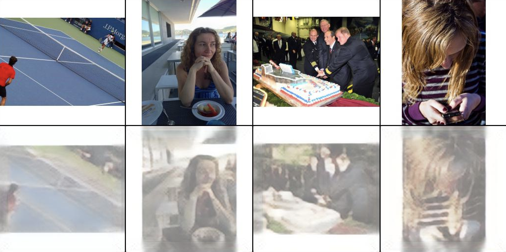

代码主要还是来自两个repo CompVis 和outlier
第二个人是一个油管作者,视频讲解很清楚,遇到各种问题也可以从官方或者outlier的代码里面找到问题,不过具体实现和光看论文还是有一些区别.
这次从零实现LDM是以学习为目的,一定要说的话确实是造轮子 ,需要成品直接去官方搬就行了. 官方文档写的也挺清楚的了.
github repo地址
VQ构成
Residual层
d2l的残差块, 后续encoder的decoder里面会用到. 残差块的思路都是一样的,在核心部分也只是填充作用,不多做解释.
1 2 3 4 5 6 7 8 9 10 11 12 13 14 15 16 17 18 19 20 21 22 23 24 25 26 27 28 class Residual (nn.Module): def __init__ (self, input_channels, num_channels, use_1x1conv=False , strides=1 ): super ().__init__() self.conv1 = nn.Conv2d(input_channels, num_channels, kernel_size=3 , padding=1 , stride=strides) self.conv2 = nn.Conv2d(num_channels, num_channels, kernel_size=3 , padding=1 ) if use_1x1conv: self.conv3 = nn.Conv2d(input_channels, num_channels, kernel_size=1 , stride=strides) else : self.conv3 = None self.bn1 = nn.BatchNorm2d(num_channels) self.bn2 = nn.BatchNorm2d(num_channels) def forward (self, X ): Y = F.relu(self.bn1(self.conv1(X))) Y = self.bn2(self.conv2(Y)) if self.conv3: X = self.conv3(X) if X.shape != Y.shape: return F.relu(Y) Y += X return F.relu(Y)
Attention层
CV的attention存在两种,一种Spatial SelfAttention,一种Channel SelfAttention.
假设图片维度为HxWxC
Spatial的做法是1x1卷积层连接所有通道信息构成新图HxWx1,然后对这个新图做SelfAttention, 侧重点在于对图像的平面维度做权重.
Channel的做法是首先mxn的pool层将信息整合到1x1xC,然后对所有的通道做权重,侧重点在于通道.
这里我们用的是Spatial Attention.
1 2 3 4 5 6 7 8 9 10 11 12 13 14 15 16 17 18 19 20 21 22 23 24 25 26 27 28 29 30 31 32 33 34 35 36 37 38 39 40 41 42 43 44 45 46 47 48 49 50 51 52 class SelfAttention (nn.Module): def __init__ (self, in_channels ): super ().__init__() self.in_channels = in_channels self.norm = torch.nn.GroupNorm(num_groups=32 , num_channels=in_channels, eps=1e-6 , affine=True ) self.q = torch.nn.Conv2d(in_channels, in_channels, kernel_size=1 , stride=1 , padding=0 ) self.k = torch.nn.Conv2d(in_channels, in_channels, kernel_size=1 , stride=1 , padding=0 ) self.v = torch.nn.Conv2d(in_channels, in_channels, kernel_size=1 , stride=1 , padding=0 ) self.proj_out = torch.nn.Conv2d(in_channels, in_channels, kernel_size=1 , stride=1 , padding=0 ) def forward (self, x ): h_ = x h_ = self.norm(h_) q = self.q(h_) k = self.k(h_) v = self.v(h_) b, c, h, w = q.shape q = q.reshape(b, c, h * w) q = q.permute(0 , 2 , 1 ) k = k.reshape(b, c, h * w) w_ = torch.bmm(q, k) w_ = w_ * (int (c) ** (-0.5 )) w_ = torch.nn.functional.softmax(w_, dim=2 ) v = v.reshape(b, c, h * w) w_ = w_.permute(0 , 2 , 1 ) h_ = torch.bmm(v, w_) h_ = h_.reshape(b, c, h, w) h_ = self.proj_out(h_) return x + h_
UpSample 和 DownSample
encoder会增加输入的通道数:比如把3通道变成128. 然后依据我们提供的Down Sampling Factor $ f $, 每次我们通道数乘以2,宽高除以二. 这里的encode宽高除以2或者decode宽高乘2的部分就是这几个block做的.
1 2 3 4 5 6 7 8 9 10 11 12 13 14 15 16 17 18 19 class UpSampleBlock (nn.Module): def __init__ (self, channels ): super (UpSampleBlock, self).__init__() self.conv = nn.Conv2d(channels, channels, 3 , 1 , 1 ) def forward (self, x ): x = F.interpolate(x, scale_factor=2.0 ) return self.conv(x) class DownSampleBlock (nn.Module): def __init__ (self, channels ): super (DownSampleBlock, self).__init__() self.conv = nn.Conv2d(channels, channels, 3 , 2 , 0 ) def forward (self, x ): pad = (0 , 1 , 0 , 1 ) x = F.pad(x, pad, mode="constant" , value=0 ) return self.conv(x)
Encoder, Decoder
核心部分.
Encoder工作流程: 输入通道从3变成规定大小, 然后进行宽高压缩以及残差块的连接, 在合适的resolution加入selfattention.
Decoder工作流程: 首先使用encoder的结尾操作的逆操作(比如encoder末尾还会有ResBlock和AttentionBlock),然后做upsampling和残差块注意力块连接,最后输出通道从规定大小变成3.
1 2 3 4 5 6 7 8 9 10 11 12 13 14 15 16 17 18 19 20 21 22 23 24 25 26 27 28 29 30 31 32 33 34 35 36 37 38 39 40 41 42 43 44 45 46 47 48 49 50 51 52 53 54 55 56 57 58 59 60 61 62 63 64 65 66 67 68 69 70 71 72 73 74 75 76 77 78 79 80 81 82 83 84 85 86 87 88 89 90 91 92 93 94 95 96 97 98 99 100 101 102 103 104 105 106 107 108 109 110 111 112 113 114 115 116 117 118 119 120 121 122 123 124 125 126 127 128 129 130 131 132 133 134 135 136 137 138 139 140 141 142 def Normalize (in_channels, num_groups=32 ): return torch.nn.GroupNorm(num_groups=num_groups, num_channels=in_channels, eps=1e-6 , affine=True ) class Encoder (nn.Module): def __init__ (self, input_channels, number_res, f=8 , attn_res=32 ): """ Initialize the class with the given input channels, number of residuals, and down sampling factor f. Parameters: input_channels (int): The number of input channels. number_res (int): The number of residuals. f (int, optional): Down sampling factor with a default value of 8. """ super ().__init__() self.input_channels = input_channels self.output_channels = input_channels // f self.level = math.log2(f) if self.level != int (self.level): raise ValueError('Down Sampling factor Wrong!' ) self.level = int (self.level) self.block = nn.ModuleList() self.rgb2input_channel = nn.Conv2d(3 , input_channels, 3 , 1 , 1 ) self.block.append(self.rgb2input_channel) curr_output = self.input_channels for i_level in range (self.level): curr_f = 2 ** i_level curr_input = self.input_channels // curr_f curr_output = curr_input // 2 self.res_sequence = nn.ModuleList() for i in range (number_res): if i == 0 : self.res_sequence.append(Residual(curr_input, curr_output)) else : self.res_sequence.append(Residual(curr_output, curr_output)) if curr_output == attn_res: self.attn = SelfAttention(curr_output) self.res_sequence.append(self.attn) self.block.append(nn.Sequential(*self.res_sequence)) if i_level != self.level - 1 : self.block.append(DownSampleBlock(curr_output)) self.mid = nn.ModuleList() self.mid.append(Residual(curr_output, curr_output)) self.mid.append(SelfAttention(curr_output)) self.mid.append(Residual(curr_output, curr_output)) self.end = nn.ModuleList() self.end.append(Normalize(curr_output)) self.conv_out = torch.nn.Conv2d(curr_output, curr_output, kernel_size=3 , stride=1 , padding=1 ) self.end.append(self.conv_out) def forward (self, x ): for layer in self.block: x = layer(x) for layer in self.mid: x = layer(x) for layer in self.end: x = layer(x) return x class Decoder (nn.Module): def __init__ (self, input_channels, number_res, f=8 , attn_res=32 ): """ Initialize the class with the given input channels, number of residuals, and down sampling factor f. Parameters: input_channels (int): The number of input channels. number_res (int): The number of residuals. f (int, optional): Down sampling factor with a default value of 8. """ super ().__init__() self.input_channels = input_channels self.output_channels = input_channels // f self.level = math.log2(f) if self.level != int (self.level): raise ValueError('Down Sampling factor Wrong!' ) self.level = int (self.level) self.block = nn.ModuleList() curr_output = self.output_channels self.mid = nn.ModuleList() self.mid.append(Residual(curr_output, curr_output)) self.mid.append(SelfAttention(curr_output)) self.mid.append(Residual(curr_output, curr_output)) for i_level in range (self.level): curr_f = 2 ** i_level curr_input = self.output_channels * curr_f curr_output = curr_input * 2 self.res_sequence = nn.ModuleList() for i in range (number_res): if i == 0 : self.res_sequence.append(Residual(curr_input, curr_output)) else : self.res_sequence.append(Residual(curr_output, curr_output)) if curr_output == attn_res: self.attn = SelfAttention(curr_output) self.res_sequence.append(self.attn) self.block.append(nn.Sequential(*self.res_sequence)) if i_level != self.level - 1 : self.block.append(UpSampleBlock(curr_output)) self.end = nn.ModuleList() self.end.append(Normalize(curr_output)) self.conv_out = torch.nn.Conv2d(curr_output, curr_output, kernel_size=3 , stride=1 , padding=1 ) self.end.append(self.conv_out) self.rgb2input_channel = nn.Conv2d(curr_output, 3 , 3 , 1 , 1 ) self.end.append(self.rgb2input_channel) def forward (self, x ): for layer in self.mid: x = layer(x) for layer in self.block: x = layer(x) for layer in self.end: x = layer(x) return x
需要注意attention操作里面的bmm非常容易爆掉cuda,尽量在resolution低一点再加SelfAttention.
VectorQuantizer2
本质就是计算输入到embedding的距离,然后取距离最小的那个vector作为我们的输出z_q, 即向量量子化. 但是这里存在问题:向量量子化会导致无法求取梯度,所以这里我们需要手动进行Straight-Through Estimator ,这里的链接是VQVAE的,对理解也有好处. 处理完毕之后进行向量返回并且将loss在这里手动返回,即codebook loss.
1 2 3 4 5 6 7 8 9 10 11 12 13 14 15 16 17 18 19 20 21 22 23 24 25 26 27 28 29 30 31 32 33 34 35 36 37 38 39 40 41 42 43 44 class VectorQuantizer2 (nn.Module): """ Improved version over VectorQuantizer, can be used as a drop-in replacement. Mostly avoids costly matrix multiplications and allows for post-hoc remapping of indices. """ def __init__ (self, n_e, e_dim, beta ): super ().__init__() self.n_e = n_e self.e_dim = e_dim self.beta = beta self.embedding = nn.Embedding(self.n_e, self.e_dim) self.embedding.weight.data.uniform_(-1.0 / self.n_e, 1.0 / self.n_e) def forward (self, z ): z = rearrange(z, 'b c h w -> b h w c' ).contiguous() z_flattened = z.view(-1 , self.e_dim) d = torch.sum (z_flattened ** 2 , dim=1 , keepdim=True ) + \ torch.sum (self.embedding.weight ** 2 , dim=1 ) - 2 * \ torch.einsum('bd,dn->bn' , z_flattened, rearrange(self.embedding.weight, 'n d -> d n' )) min_encoding_indices = torch.argmin(d, dim=1 ) z_q = self.embedding(min_encoding_indices).view(z.shape) perplexity = None min_encodings = None loss = torch.mean((z_q.detach() - z) ** 2 ) + self.beta * torch.mean((z_q - z.detach()) ** 2 ) z_q = z + (z_q - z).detach() z_q = rearrange(z_q, 'b h w c -> b c h w' ).contiguous() return z_q, loss, (perplexity, min_encodings, min_encoding_indices)
VQModel
最后我们把前面的模块都丢到一块,即VQModel,后续训练也会直接使用VQModel. 1 2 3 4 5 6 7 8 9 10 11 12 13 14 15 16 17 18 19 20 21 22 23 24 25 26 27 28 29 30 31 32 33 34 35 36 37 38 39 40 41 42 43 44 class VQModel (nn.Module): def __init__ (self, n_e, e_dim, beta, input_channel, num_res, f=8 ): super ().__init__() self.encoder = Encoder(input_channel, num_res, f) self.decoder = Decoder(input_channel, num_res, f) self.vq = VectorQuantizer2(n_e, e_dim, beta) self.quant_conv = torch.nn.Conv2d(input_channel // f, e_dim, 1 ) self.post_quant_conv = torch.nn.Conv2d(e_dim, input_channel // f, 1 ) def encode (self, x ): h = self.encoder(x) h = self.quant_conv(h) return self.vq(h) def decode (self, x ): quant = self.post_quant_conv(x) dec = self.decoder(quant) return dec def forward (self, x ): quant, diff, (_, _, ind) = self.encode(x) dec = self.decode(quant) return dec, diff def get_last_layer (self ): return self.decoder.conv_out.weight def init_from_ckpt (self, path, ignore_keys=None ): if ignore_keys is None : ignore_keys = list () sd = torch.load(path, map_location="cpu" )["state_dict" ] keys = list (sd.keys()) for k in keys: for ik in ignore_keys: if k.startswith(ik): print ("Deleting key {} from state_dict." .format (k)) del sd[k] self.load_state_dict(sd, strict=False ) print (f"Restored from {path} " )
Loss
官方的Loss写的其实挺抽象的, 后来去看了outlier的视频发现他把官方的整合类拆开了然后自己手动在train的部分手写了一个loss.
仔细思考了一下感觉似乎还是官方的方式会好一些,毕竟确实loss设计的逻辑很多很杂,抽开来看确实容易理解,但是代码复用性就挺差的.
首先这个First stage的模型的损失函数是一个混合函数. 官方给他命名为VQLPIPSWithDiscriminator,拆开来就是VQ + LPIPS + Discriminator.
VQ
这个部分刚刚已经说过了, codebook loss的部分会直接被手动计算进行返回.
LPIPS
全名Learned Perceptual Image Patch Similarity, 即感知损失. 它能做到什么事情呢?
传统MSE损失: 如果你把图片全局向左平移一格,由于每个像素都得到了巨幅改变,会导致MSE巨大. 然而这是不合理的, 一格像素的平移不应该造成这么大的损失, 尤其对于人的肉眼而言, 一格像素的平移应该是没有多少感知差异 的.
所以LPIP做到的就是从人的感知差异层面做误差判断. 具体来说就是训练一个vgg来模拟人类视觉感知从而对图片进行感知层面 的正确评估.
代码我直接抄的CompVis官方的,顺便官方提供了已经训练好的vgg,直接load就行.
官方代码
这个部分会负责返回Perceptual Loss
Reconstruction Loss
这个部分官方直接用的L1损失, 对p_loss做权重之后和reconstruction loss一起取平均就构成了perceptual_rec_loss 1 2 3 4 5 6 7 def forward (self, codebook_loss, inputs, reconstructions, global_step, last_layer=None ): rec_loss = torch.abs (inputs.contiguous() - reconstructions.contiguous()) p_loss = self.perceptual_loss(inputs.contiguous(), reconstructions.contiguous()) perceptual_rec_loss = torch.mean(rec_loss + self.perceptual_weight * p_loss)
Discriminator Loss
这个discriminator loss就是用的GAN的idea了. Discriminator的代码可以直接照抄 . 1 2 3 4 5 self.discriminator = NLayerDiscriminator(input_nc=disc_in_channels, n_layers=disc_num_layers, use_actnorm=use_actnorm, ndf=disc_ndf ).apply(weights_init)
然后损失部分后续:
1 2 3 4 5 6 7 8 9 10 11 12 13 14 15 16 17 18 19 20 21 def forward (self, codebook_loss, inputs, reconstructions, global_step, last_layer=None ): ''' ################ Reconstruction Loss part here ################ ''' disc_real = self.discriminator(inputs) disc_fake = self.discriminator(reconstructions) g_loss = -torch.mean(disc_fake) disc_factor = adopt_weight(self.disc_factor, global_step, threshold=self.discriminator_iter_start) d_loss = disc_factor * self.disc_loss(disc_real, disc_fake) d_weight = self.calculate_adaptive_weight(perceptual_rec_loss, g_loss, last_layer=last_layer) vq_loss = perceptual_rec_loss + self.codebook_weight * codebook_loss + disc_factor * d_weight * d_loss return vq_loss, d_loss
adopt_weight对discriminator进行延后设置(即多少全局步数之后才会启用discriminator).
最后把real input和reconstruct input进行输入,使用hinge loss进行误差计算, 然后生成一个d_loss,即discriminator loss.
这里还会涉及一个g_loss来求得一个所谓的lambda(outlier是这么说的),也就是这里的d_weight. 这里我不太了解细节,估计是GAN相关知识?后续有机会再补.
这个生成的d_weight作为discriminator的误差权重加入最终误差vq_loss的计算,然后返回vq_loss和d_loss.
完整loss代码
1 2 3 4 5 6 7 8 9 10 11 12 13 14 15 16 17 18 19 20 21 22 23 24 25 26 27 28 29 30 31 32 33 34 35 36 37 38 39 40 41 42 43 44 45 46 47 48 49 50 51 52 53 54 55 56 57 58 59 60 61 class VQLPIPSWithDiscriminator (nn.Module): def __init__ (self, disc_start=1 , codebook_weight=1.0 , disc_num_layers=3 , disc_in_channels=3 , disc_factor=1.0 , disc_weight=0.6 , perceptual_weight=1.0 , use_actnorm=False , disc_conditional=False , disc_ndf=64 , disc_loss="hinge" ): super ().__init__() self.codebook_weight = codebook_weight self.perceptual_loss = LPIPS().eval () self.perceptual_weight = perceptual_weight self.discriminator = NLayerDiscriminator(input_nc=disc_in_channels, n_layers=disc_num_layers, use_actnorm=use_actnorm, ndf=disc_ndf ).apply(weights_init) self.discriminator_iter_start = disc_start if disc_loss == "hinge" : self.disc_loss = hinge_d_loss else : raise ValueError(f"Unknown GAN loss '{disc_loss} '." ) print (f"VQLPIPSWithDiscriminator running with {disc_loss} loss." ) self.disc_factor = disc_factor self.discriminator_weight = disc_weight self.disc_conditional = disc_conditional def calculate_adaptive_weight (self, nll_loss, g_loss, last_layer=None ): if last_layer is not None : nll_grads = torch.autograd.grad(nll_loss, last_layer, retain_graph=True )[0 ] g_grads = torch.autograd.grad(g_loss, last_layer, retain_graph=True )[0 ] else : nll_grads = torch.autograd.grad(nll_loss, self.last_layer[0 ], retain_graph=True )[0 ] g_grads = torch.autograd.grad(g_loss, self.last_layer[0 ], retain_graph=True )[0 ] d_weight = torch.norm(nll_grads) / (torch.norm(g_grads) + 1e-4 ) d_weight = torch.clamp(d_weight, 0.0 , 1e4 ).detach() d_weight = d_weight * self.discriminator_weight return d_weight def forward (self, codebook_loss, inputs, reconstructions, global_step, last_layer=None ): rec_loss = torch.abs (inputs.contiguous() - reconstructions.contiguous()) p_loss = self.perceptual_loss(inputs.contiguous(), reconstructions.contiguous()) perceptual_rec_loss = torch.mean(rec_loss + self.perceptual_weight * p_loss) disc_real = self.discriminator(inputs) disc_fake = self.discriminator(reconstructions) g_loss = -torch.mean(disc_fake) disc_factor = adopt_weight(self.disc_factor, global_step, threshold=self.discriminator_iter_start) d_loss = disc_factor * self.disc_loss(disc_real, disc_fake) d_weight = self.calculate_adaptive_weight(perceptual_rec_loss, g_loss, last_layer=last_layer) vq_loss = perceptual_rec_loss + self.codebook_weight * codebook_loss + disc_factor * d_weight * d_loss return vq_loss, d_loss
复杂吗?确实挺复杂的,三类误差全部丢到一个类里面怎么才能不复杂, 官方写vqgan的时候甚至使用的是pl.LightningModule,这是一个pytorch的高级框架,里面有些参数(比如optimizer_idx)是框架处理的,读起来就更加费劲. 不过多亏了outlier的视频和代码最终的实现才简单不少.
不过最终考虑到模块功能确实是求损失函数我还是选择了把这些一起丢到了VQLPIPSWithDiscriminator这个类.
dataset和train_class
数据集
数据集用的mscoco.
使用说明地址:https://github.com/rom1504/img2dataset/blob/main/dataset_examples/mscoco.md
下载下来了解了一下发现是webdataset,手动写个载入.
1 2 3 4 5 6 7 8 9 10 11 12 13 14 15 16 17 18 19 import torchvision.transforms as transformsimport webdataset as wdsfrom torch.utils.data import DataLoaderdef preprocessing (sample ): txt, img = sample preproc = transforms.Compose([ transforms.Resize((256 , 256 )), transforms.ToTensor(), ]) return txt, preproc(img) def get_dataloader (file_path, batch_size ): dirpath = file_path dataset = wds.WebDataset(dirpath).shuffle(1000 ).decode("pil" ).to_tuple("txt" , "jpg" ).map (preprocessing) dataloader = DataLoader(dataset, batch_size=batch_size) return dataloader
trainer
因为我把loss还是选择了丢在一个类里,所以我最终实现可能看起来比outlier简单一点
1 2 3 4 5 6 7 8 9 10 11 12 13 14 15 16 17 18 19 20 21 22 23 24 25 26 27 28 29 30 31 32 33 34 35 36 37 38 39 40 41 42 43 44 45 46 47 48 49 50 51 52 53 54 55 56 57 58 59 60 61 62 63 64 65 66 67 68 69 70 71 72 73 74 75 76 77 78 79 80 81 82 83 84 85 86 87 88 89 90 91 92 93 94 95 96 97 98 99 100 101 import osimport numpy as npfrom torchvision import utils as vutilsfrom tqdm import tqdmimport syssys.path.append("/home/lxia" ) from ldm.data.mscoco_dataloader import get_dataloaderfrom ldm.loss.vqperceptual import VQLPIPSWithDiscriminatorfrom ldm.model.ldm import *class TrainVQ : def __init__ (self, vq, dataloader, num_epochs, lr=1e-6 , betas=(0.5 , 0.9 'cuda' ): if device == 'cuda' : self.device = torch.device("cuda" ) if torch.cuda.is_available() else torch.device("cpu" ) self.vq = vq.to(self.device) self.dataloader = dataloader self.lr = lr self.betas = betas self.vq_perceptual_disc = VQLPIPSWithDiscriminator().to(self.device) self.num_epochs = num_epochs def get_optimizer_autoencoder (self ): autoencoder = self.vq lr = self.lr betas = self.betas optimizer = torch.optim.Adam(list (autoencoder.encoder.parameters()) + list (autoencoder.decoder.parameters()) + list (autoencoder.vq.parameters()) + list (autoencoder.quant_conv.parameters()) + list (autoencoder.post_quant_conv.parameters()), lr=lr, betas=betas ) return optimizer def get_optimizer_discriminator (self ): discriminator = self.vq_perceptual_disc.discriminator lr = self.lr betas = self.betas optimizer = torch.optim.Adam(list (discriminator.parameters()), lr=lr, betas=betas ) return optimizer def train (self ): opt_autoencoder = self.get_optimizer_autoencoder() opt_discriminator = self.get_optimizer_discriminator() counter = 0 for epoch in range (self.num_epochs): with tqdm(self.dataloader) as pbar: for i, (_, (txt, img)) in enumerate (zip (pbar, self.dataloader)): counter += len (img) img = img.to(self.device) decoded_img, codebook_loss = self.vq(img) vq_loss, d_loss = self.vq_perceptual_disc(codebook_loss=codebook_loss, inputs=img, reconstructions=decoded_img, global_step=counter, last_layer=self.vq.get_last_layer() ) opt_autoencoder.zero_grad() opt_discriminator.zero_grad() vq_loss.backward(retain_graph=True ) d_loss.backward() opt_autoencoder.step() opt_discriminator.step() if i % 1000 == 0 : with torch.no_grad(): real_fake_images = torch.cat((img[:4 ], decoded_img.add(1 ).mul(0.5 )[:4 ])) vutils.save_image(real_fake_images, os.path.join("results" , f"{epoch} _{i} .jpg" ), nrow=4 ) pbar.set_postfix( vq_Loss=np.round (vq_loss.cpu().detach().numpy().item(), 5 ), d_Loss=np.round (d_loss.cpu().detach().numpy().item(), 3 ) ) pbar.update(0 ) torch.save(self.vq.state_dict(), os.path.join("checkpoints" , f"vq_epoch_{epoch} .pt" )) if __name__ == '__main__' : BATCH_SIZE = 4 device = "cuda" if torch.cuda.is_available() else "cpu" data_path = '/home/lxia/ldm/data/dataset/{00000..00059}.tar' dataloader = get_dataloader(data_path, batch_size=BATCH_SIZE) num_residual = 2 vq = VQModel(n_e=4096 , e_dim=256 , beta=0.25 , input_channel=256 , num_res=num_residual) num_epochs = 20 trainer = TrainVQ(vq=vq, dataloader=dataloader, num_epochs=num_epochs) trainer.train()
batch设置过高会直接oom,量力而行. 个人感觉数据集也挺大的,所以其实也训练了超级久,可以尝试把tar文件仅载入0-9而不是0-59,然后epoch做做设置,训练应该会快不少.
我目前自己跑的大概进行了半个epoch效果如图,目测多几个epoch效果会显著不少. 